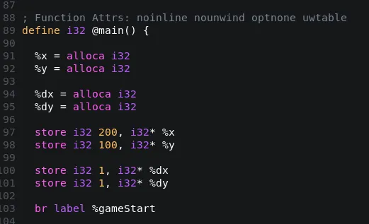
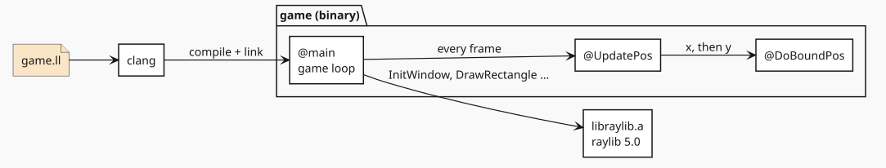

- Role
- Author, learning in public
- When
- Aug 2024
- Stack
- LLVM IR, clang, raylib 5.0
What it is
LLVM IR is meant to be written by compilers, not people. These are my notes from writing it by hand: hello.ll calls printf, loop.ll is a for loop as basic blocks, and game.ll opens an 800×600 window and bounces a green square. Clang compiles the .ll file directly and links raylib statically.


Code overview
One .ll file, three functions and a static raylib:

diagrams/raylib-llvm-ir.puml).@main: the game loop
Labelled blocks instead of a while: draw a frame, move the square, jump back.
shouldClose:
%close = call i1 @WindowShouldClose()
br i1 %close, label %closeWindow, label %draw
draw:
call void @BeginDrawing()
call void @ClearBackground(i32 u0xFF181818)
%posx = load i32, i32* %x
%posy = load i32, i32* %y
; global constants must be pointers
%width = load i32, i32* @width
%height = load i32, i32* @height
call void
@DrawRectangle(
i32 %posx,
i32 %posy,
i32 %width,
i32 %height,
i32 u0xFF00FF00
)
call void @EndDrawing()
; incrementing position
call void
@UpdatePos(
i32* %x,
i32* %y,
i32* %dx,
i32* %dy
)
br label %shouldClose@UpdatePos
Adds the velocity to the position, then checks each axis against its bound.
define void @UpdatePos(i32* %x, i32* %y, i32* %dx, i32* %dy) {
%posx = load i32, i32* %x
%posy = load i32, i32* %y
%ldx = load i32, i32* %dx
%ldy = load i32, i32* %dy
%posx_off = add nsw i32 %posx, %ldx
%posy_off = add nsw i32 %posy, %ldy
; loading globals
%x_bound = load i32, i32* @x_bound
%y_bound = load i32, i32* @y_bound
call void
@DoBoundPos(
i32* %x,
i32* %dx,
i32 %posx_off,
i32 %x_bound
)
call void
@DoBoundPos(
i32* %y,
i32* %dy,
i32 %posy_off,
i32 %y_bound
)
ret void
}@DoBoundPos
Out of bounds? Flip the velocity by subtracting it from zero. Otherwise store the new position.
; bounds checking
define void @DoBoundPos(i32* %p, i32* %dp, i32 %pos_off, i32 %size) {
%zero = icmp slt i32 %pos_off, 0
%over = icmp sgt i32 %pos_off, %size
%ok = or i1 %zero, %over
br i1 %ok, label %update_dp, label %update_p
update_dp:
%ldp = load i32, i32* %dp
; clever
%neg_dp = sub nuw i32 0, %ldp
store i32 %neg_dp, i32* %dp
ret void
update_p:
store i32 %pos_off, i32* %p
ret void
}raylib
The C functions, declared by hand. Colours go in as one packed i32, the way clang passes raylib's Color struct.
declare void @InitWindow(i32, i32, i8*)
declare void @CloseWindow()
declare void @ClearBackground(i32)
declare void @BeginDrawing()
declare void @EndDrawing()
declare void @DrawRectangle(i32, i32, i32, i32, i32)
declare i1 @WindowShouldClose()game: game.ll
clang -o game game.ll -L./raylib-5.0_linux_amd64/lib -l:libraylib.a -lmHistory
- 7 Aug 2024Repository created.
- 8 Aug 2024The notes, the three .ll files and screenshots.
Thanks to Tsoding for the stream, to raylib for the API, and to vim-llvm for the highlighting.